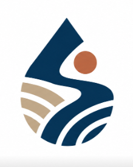

Projeto Integrador · Senac
Cada lote com a água que ele precisa. Nem uma gota a mais.
Gestão do consumo de água por lote nas lavanderias de jeans do Agreste Pernambucano.
Feira ProjetAÍ · novembro de 2026
Cartão de apoio · slide 1 de 9
Abertura (10 s): “Somos o Águas do Capibaribe. A gente ajuda lavanderia de jeans a saber quanta água cada lote gastou e se passou da meta.” Aponte para o celular ou o notebook com o site aberto e convide para a demonstração do sensor.
O problema
14–16%
da produção nacional de jeans sai do Agreste Pernambucano
77%+
da água usada volta ao rio Capibaribe sem tratamento adequado
No olho
é como o consumo é controlado hoje: sem meta por processo nem histórico
Fonte: Termo de Abertura do Projeto (TAP), seção 3.1
Cartão de apoio · slide 2 de 9
O polo de Toritama, Caruaru e Santa Cruz do Capibaribe faz de 14% a 16% do jeans do Brasil. A água é cara (poço e caminhão-pipa) e mais de 77% volta ao rio sem tratamento. Já tem fiscalização do MPPE e da CPRH. E ninguém mede quanto cada processo gasta: é tudo no olho.
Por que importa
R$ 56 mil
por mês em água comprada numa lavanderia de porte médio, com cerca de 70.000 litros por dia
R$ 40 mil+
de economia por mês possível com reúso consistente, de até 85%, já visto na região
Além disso: menos risco de embargo pela fiscalização ambiental e a rastreabilidade hídrica que as marcas compradoras já pedem.
Estimativas de referência do TAP, seção 3.3. Não são medições feitas pelo sistema.
Cartão de apoio · slide 3 de 9
Os números são estimativas do nosso Termo de Abertura, não medição do sistema. Uma lavanderia média pode gastar uns R$ 56 mil por mês comprando água. Com reúso bem feito, a economia passa de R$ 40 mil por mês. E medir por lote é o primeiro passo para saber onde está o desperdício.
A solução
1
Litros por lote ou por peça para cada processo: estonagem, tingimento, amaciamento.
2
O operador registra no celular, até sem internet, ou o sensor envia sozinho.
3
Dentro da meta: até 0%
Atenção: até 8%
Crítico: acima de 8%
4
3 lotes seguidos acima da meta abrem um alerta e avisam no Telegram. Relatório em PDF, Excel e CSV.
Cartão de apoio · slide 4 de 9
O gestor define a meta de cada processo. Cada lote registrado, pelo operador ou pelo sensor, é comparado com a meta na hora: dentro, atenção ou crítico. Três lotes seguidos acima da meta abrem um alerta e mandam mensagem no Telegram. No fim do mês, o relatório sai em PDF ou Excel para mostrar a cliente e a fiscalização.
Arquitetura
PWA: abre e guarda lotes sem conexão
Wokwi, HTTPS e token de API
Java 25 e regras de negócio
Login JWT, perfis e Actuator
Flyway e usuário restrito
Aviso de alerta (opcional)
O site nunca acessa o banco: o site e o sensor são clientes iguais da mesma API.
Cartão de apoio · slide 5 de 9
O site e o sensor falam com a mesma API, em Java com Spring Boot. Só a API toca no banco PostgreSQL, com um usuário que não pode apagar dados. Quando um alerta abre, a API avisa no Telegram. Tudo está publicado no Render e no Neon, e também sobe no computador com um comando do Docker.
Internet das Coisas
Mede a vazão por pulsos, como o sensor YF-S201 de verdade
Envia por HTTPS com um token que o administrador troca
Sem Wi-Fi, guarda até 100 leituras e envia depois, sem duplicar
Manda um sinal de vida a cada 15 s: a API sabe se ele está no ar
Lote crítico: LED vermelho, buzzer e aviso no Telegram
O ESP32 roda no navegador e envia para a mesma API publicada que o site usa. Não é medição de uma lavanderia real: é a prova do caminho do dispositivo até o alerta.
Cartão de apoio · slide 6 de 9
Mostre o Wokwi. O potenciômetro faz o papel da água passando. Um clique inicia o lote, outro encerra e envia. Com a vazão no máximo por uns 40 segundos, o lote passa da meta: LED vermelho, buzzer, e o alerta chega no Telegram. Depois, digite Q para derrubar o Wi-Fi por 60 segundos: o lote fica guardado e é enviado sozinho quando o sinal volta, sem duplicar.
Teste de carga (k6)
201.617
lotes gravados sem nenhuma falha
50 sensores ao mesmo tempo, cerca de 1.006 lotes por segundo (03/11)
262 ms
para 95% das respostas com 100 sensores ao mesmo tempo
GitHub Actions, com 20 conexões no banco (10/11)
0 erros
num turno industrial de 120 sensores com picos de lavagem
50.699 leituras; 95% abaixo de 151 ms no pico (17/11)
Fonte: docs/tecnico/teste-carga.md, no repositório do projeto
Cartão de apoio · slide 7 de 9
Testamos a API com o k6, simulando muitos sensores ao mesmo tempo. Com 50 sensores, foram mais de 200 mil lotes sem nenhuma falha. Com 100 sensores, 95% das respostas saíram em até 262 milissegundos. E num turno industrial de 120 sensores, com picos, não houve nenhum erro do servidor. Se perguntarem: o gargalo é o bloqueio por processo no banco, e por isso subimos o pool para 20 conexões.
Qualidade
API, site e ponta a ponta (JUnit, Vitest e Playwright), rodando em todo pull request.
Testes, Docker e vulnerabilidades conhecidas antes de publicar no Render.
Quality Gate da disciplina: cobertura, duplicação e problemas novos.
Contraste WCAG 2.1 AA, uso pelo teclado e verificação com axe-core.
Senhas com BCrypt, token do sensor trocável e logins mascarados.
Requisitos (29148), segurança da informação (27001) e ciclo de vida (12207).
Cartão de apoio · slide 8 de 9
Cada mudança passa por testes automáticos antes de chegar ao ar: são mais de 500, na API, no site e de ponta a ponta. O SonarQube da disciplina barra código com problema. O site segue contraste de acessibilidade e funciona pelo teclado. A documentação segue normas ISO: requisitos, segurança da informação e ciclo de vida.
Ao vivo
aguas-do-capibaribe.onrender.com
Código aberto: github.com/paulomourz/aguas-do-capibaribe
Equipe
Pedro · Abraão Filipe · João Bezerra · Matheus Andrade · Mateus Basilio · Paulo Moura
Orientador: Fabio Cesar Figueiredo de Medeiros Chicout
Cartão de apoio · slide 9 de 9
Feche convidando para ver o sensor no Wokwi e o site no celular. O endereço é público, mas o sistema pede login: [combinar com a equipe qual conta mostrar aos visitantes]. O código está aberto no GitHub. Agradeça e apresente a equipe.